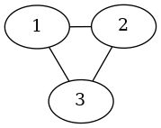

Note
Click here to download the full example code
Basic¶
A simple example to create a graphviz dot file and draw a graph.
Out:
strict graph "" {
1 -- 2;
1 -- 3;
2 -- 3;
}
# Copyright (C) 2006 by
# Aric Hagberg <hagberg@lanl.gov>
# Dan Schult <dschult@colgate.edu>
# Manos Renieris, http://www.cs.brown.edu/~er/
# Distributed with BSD license.
# All rights reserved, see LICENSE for details.
__author__ = """Aric Hagberg (hagberg@lanl.gov)"""
import pygraphviz as pgv
A = pgv.AGraph()
A.add_edge(1, 2)
A.add_edge(2, 3)
A.add_edge(1, 3)
print(A.string()) # print to screen
A.write("simple.dot") # write to simple.dot
B = pgv.AGraph("simple.dot") # create a new graph from file
B.layout() # layout with default (neato)
B.draw("simple.png") # draw png
Total running time of the script: ( 0 minutes 0.036 seconds)